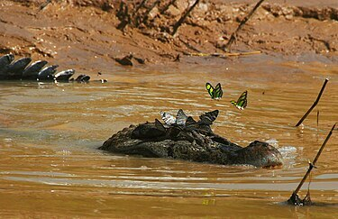

La Fauna en Peligro en Perú
Perú alberga una gran cantidad de especies animales únicas. Sin embargo, diversas amenazas como la deforestación, el cambio climático, la caza furtiva y la contaminación están llevando a muchas de ellas al borde de la extinción. A continuación, exploramos algunas de las especies más amenazadas en este país megadiverso.
Especies de Animales en Peligro
Oso de Anteojos
Región: Andes
Es el único oso nativo de Sudamérica. Su hábitat se reduce debido a la expansión agrícola y la deforestación. Está catalogado como una especie vulnerable por la IUCN. Además, el oso de anteojos es importante para el ecosistema porque ayuda a la dispersión de semillas y a la conservación de los bosques. Su población está en declive debido a la caza ilegal y la fragmentación de su hábitat.
Delfín Rosado
Región: Amazonía
Este delfín de agua dulce es único por su color rosado. Las actividades humanas, como la contaminación de los ríos y la pesca, han afectado severamente su población. El delfín rosado es un animal inteligente y juguetón, conocido por sus interacciones con los humanos. Su disminución se debe principalmente a la contaminación del agua, la destrucción de su hábitat y la pesca accidental.
Pava Aliblanca
Región: Costa norte
Esta especie de ave es endémica del Perú y enfrenta la destrucción de su hábitat. Actualmente, se encuentra en peligro crítico de extinción. La pava aliblanca, que habita en los bosques secos de la costa norte, ha sido afectada por la urbanización y la agricultura. Es un ave muy importante para el ecosistema ya que ayuda en la dispersión de semillas y mantiene el equilibrio de su hábitat.
Rana Gigante del Titicaca
Región: Lago Titicaca
Esta rana acuática es conocida por su gran tamaño y piel plegada. La contaminación del lago y la pesca indiscriminada son las principales amenazas para su supervivencia. Además de ser la rana más grande del mundo, la rana gigante del Titicaca es endémica de esta zona, lo que significa que no se encuentra en ningún otro lugar. La pérdida de su hábitat acuático es una de las mayores preocupaciones para su conservación.
Gallito de las Rocas
Región: Selva
Considerado el ave nacional del Perú, el gallito de las rocas habita en los bosques nublados. Su población está disminuyendo debido a la deforestación. Esta especie es famosa por su brillante plumaje naranja y su complejo comportamiento de cortejo. A pesar de ser un símbolo cultural del país, la deforestación y la expansión agrícola están afectando su población, poniéndola en peligro.
Caiman Negro
Región: Amazonía
Este reptil, que puede alcanzar hasta 6 metros de largo, enfrenta amenazas por la caza ilegal y la destrucción de los humedales. El caimán negro es uno de los depredadores más importantes de la Amazonía, pero su población ha disminuido debido a la caza para obtener su piel y carne. También está en peligro debido a la alteración de su hábitat natural por actividades humanas como la construcción de represas.
Lobo de Río
Región: Amazonía
También conocido como nutria gigante, el lobo de río está en peligro debido a la contaminación del agua y la pérdida de su hábitat. Esta especie de mamífero acuático es esencial para el equilibrio ecológico de los ríos amazónicos. Su dieta incluye peces y crustáceos, pero la contaminación de los cuerpos de agua está afectando gravemente su fuente de alimento.
Gato Andino
Región: Andes
Este felino es uno de los más raros del mundo y vive en los Andes. Su población está disminuyendo debido a la caza y la destrucción de su hábitat. El gato andino es un depredador de alto nivel, clave para controlar la población de roedores en las alturas. Su aislamiento geográfico y la falta de datos sobre su comportamiento hacen que su conservación sea un desafío.
Tortuga Taricaya
Región: Amazonía
Esta tortuga habita en los ríos de la Amazonía peruana y está en peligro debido a la recolección de sus huevos y la contaminación del agua. La tortuga taricaya es fundamental para el ecosistema acuático, ya que ayuda a la limpieza de los ríos y a la dispersión de semillas. Su población ha sido severamente afectada por la destrucción de su hábitat natural y la pesca.
Rana Arlequín de Machu Picchu
Región: Andes
Endémica de los bosques de altura, esta rana está en peligro debido a la pérdida de su hábitat y enfermedades emergentes. La rana arlequín de Machu Picchu es conocida por sus llamativos colores brillantes y su adaptación única a la vida en los bosques nublados. La deforestación y las enfermedades como el hongo quítrido, que afecta a muchas especies de ranas, han puesto a esta especie en grave peligro.
Guacamayo de Vientre Rojo
Región: Amazonía
Este guacamayo es nativo de la Amazonía peruana. La caza ilegal y la destrucción de su hábitat lo han puesto en peligro. El guacamayo de vientre rojo es conocido por su plumaje colorido y su naturaleza social. Su población ha disminuido drásticamente debido al tráfico ilegal de aves y la deforestación que reduce su hábitat natural.